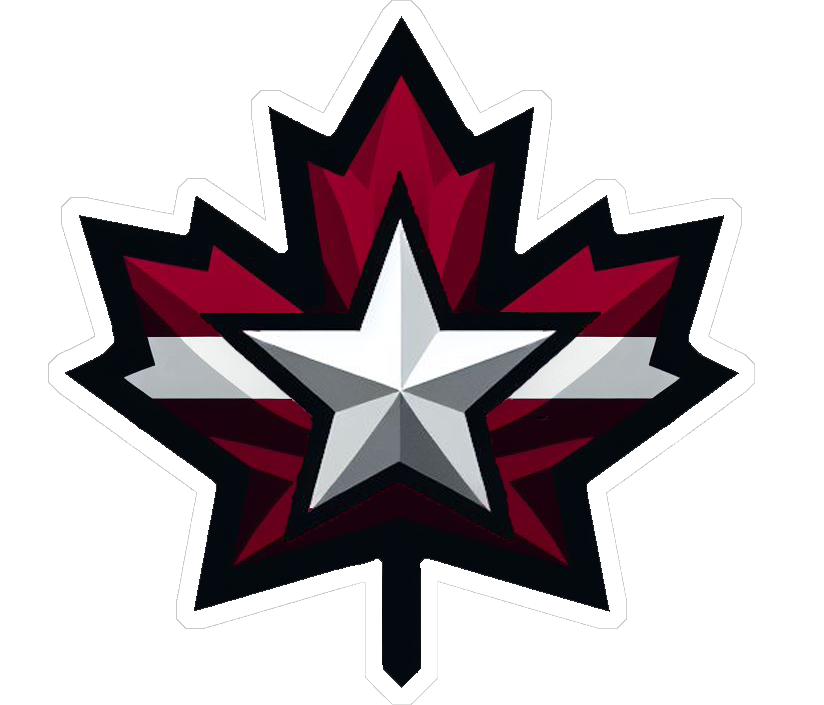

NiceHL Records
The franchise history book
Overall Records
Statistical Records
Teams
Every team. Every season.
Franchise histories
Explore the records, rivalries, and players who shaped each NiceHL franchise.
Find a franchise
Show
Current teams
All franchises
Historical franchises
Loading franchise histories…